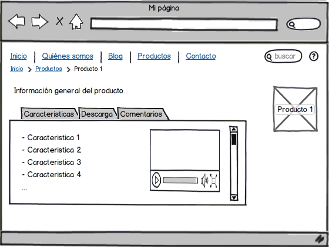

Deberá de rellenar los cuadros de texto con la información que desee, coloque el número de documento a trabajar, así como el almacen destino que para el cambio del producto, indique el ID del producto que desea guardar, así como verificar el nombre del producto. Indique cuantas unidades moverá, así como su precio unitario. Utilizando el navegador podrá realizar diferentes operaciones.
